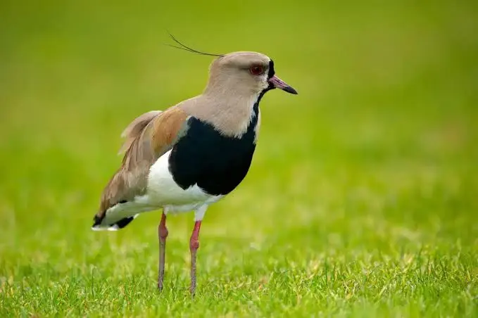
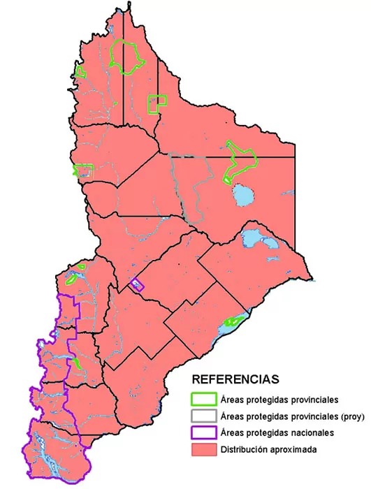

TERO
"El guardián territorial de las pampas y pastizales de América"
Nombre científico: Vanellus chilensis
Familia: Charadriidae
El tero (Vanellus chilensis) es una emblemática ave zancuda de la familia Charadriidae, muy reconocida en América del Sur por su elegancia y su comportamiento siempre alerta. Presenta un plumaje distintivo de tonos grises y pardos en el dorso, un pecho negro brillante, una fina cresta o copete en la cabeza y llamativos ojos y patas de color rojo. Cuenta con pequeños espolones rojizos bajo las alas que utiliza para proteger su nido. Es célebre por su fuerte vocalización estridente (de donde proviene su nombre popular "teru-teru"), la cual emite para dar la alarma ante la presencia de extraños o posibles amenazas, actuando como un verdadero guardián territorial.

Descripción del Habitat
Es un ave sumamente adaptable que prefiere los ecosistemas abiertos y despejados para mantener un amplio rango de visión. Habita principalmente en pastizales, praderas, campos agrícolas, márgenes de lagunas, ríos y humedales. Debido a su cercanía con las actividades humanas, se ha integrado con éxito en entornos urbanos y suburbanos, siendo muy común encontrarlo en parques, jardines amplios, campos de golf y zonas rurales del valle.
Distribución Geográfica
- Argentina
- Uruguay
- Bolivia
- Brasil
- Chile
- Colombia
- Venezuela
- Peru

Distribución en Neuquén del tero común